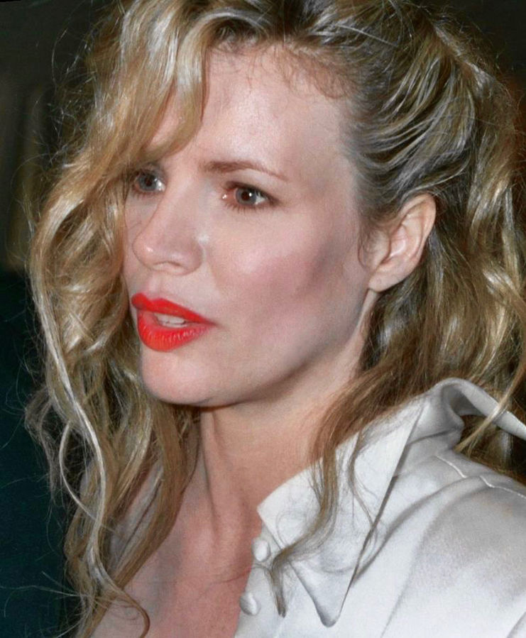
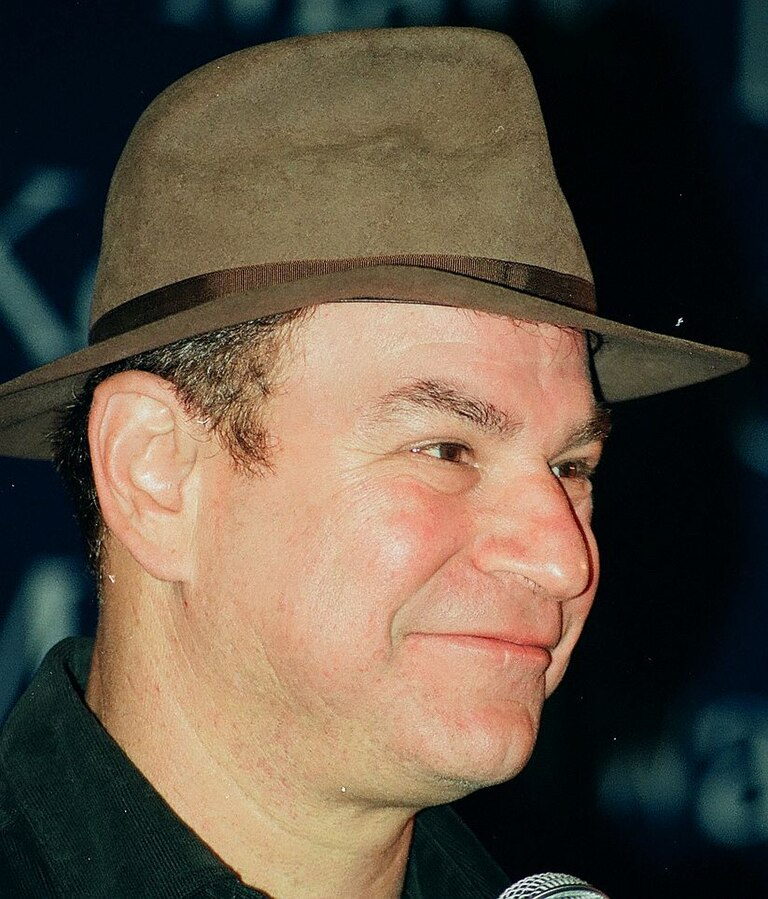
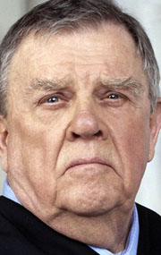
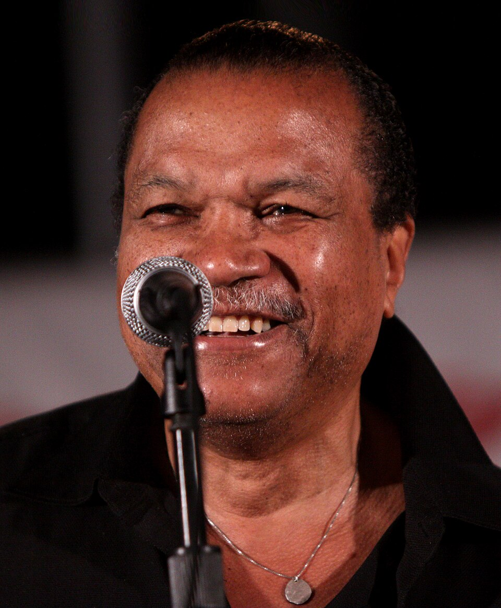
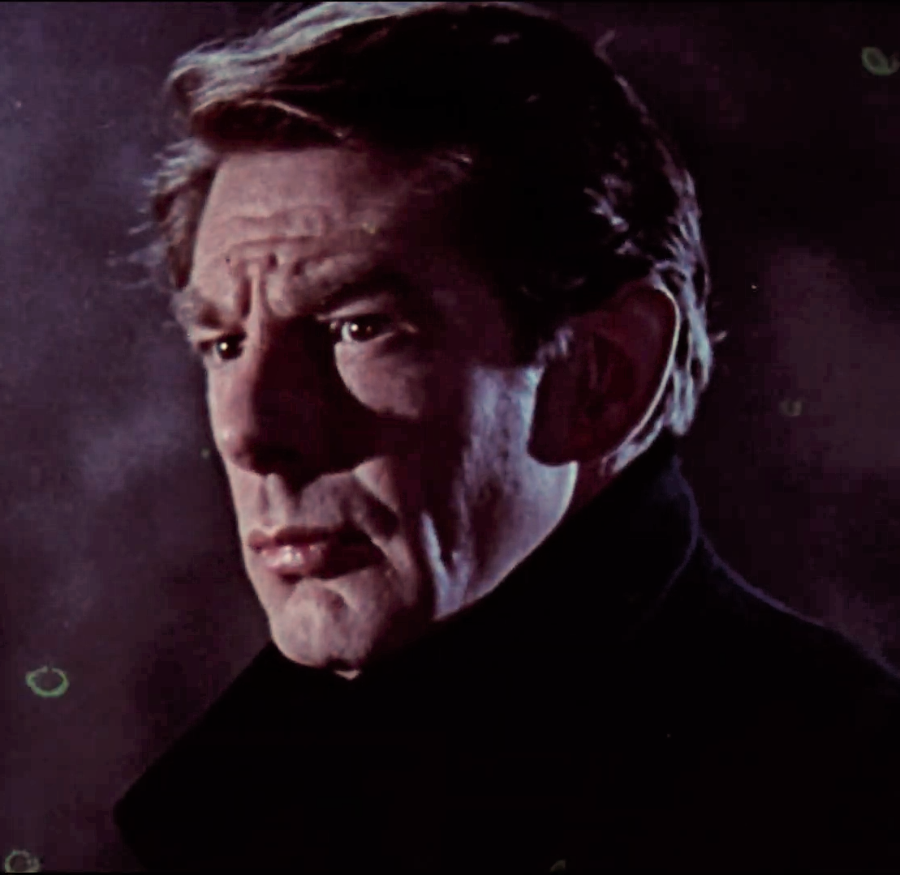
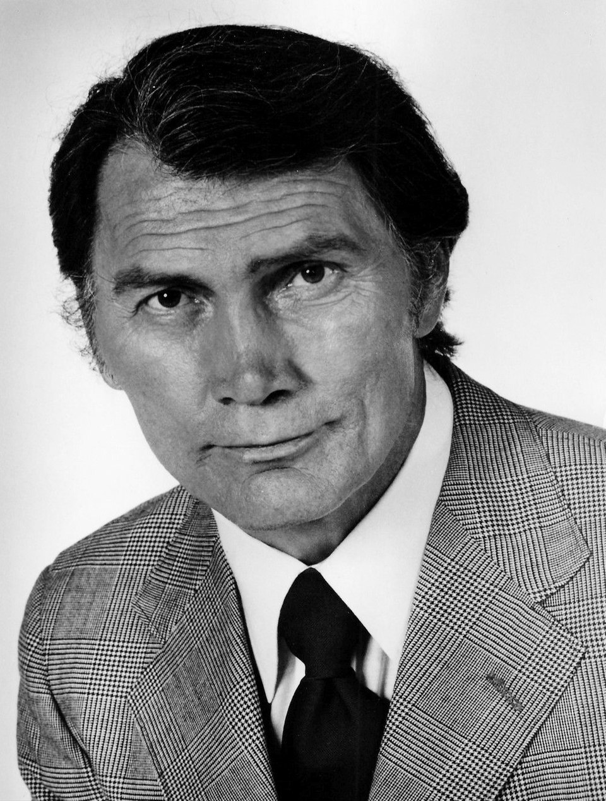
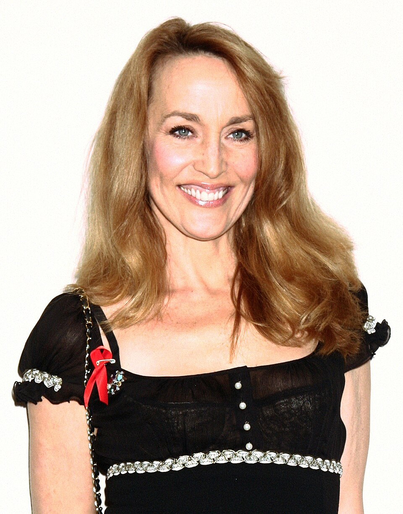
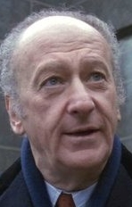
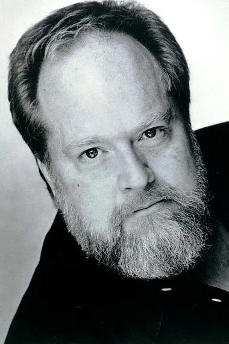

«Бетмен» (англ. Batman) — американський фільм Тіма Бертона 1989 року, що базується на однойменній серії коміксів про супергероя Бетмена.
Майкл Кітон - Бетмен / Брюс Вейн

Джек Ніколсон - Джокер / Джек Напьє
  Пет Гінгл - комісар Джеймс Ґордон
   Джеррі Голл - Алісія Гант

Трейсі Волтер - Боб
Лі Воллес - мер
Вільям Гуткінс - лейтенант Екхард